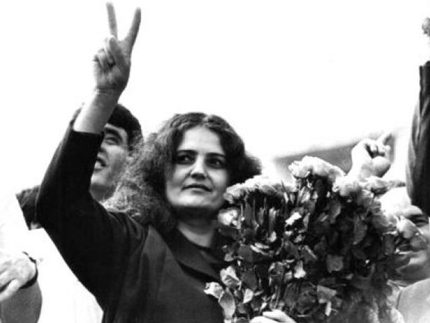
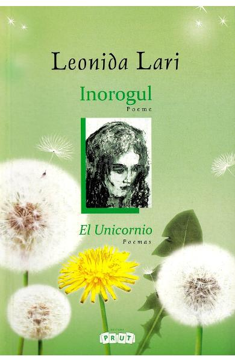
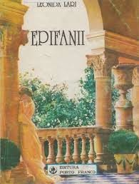
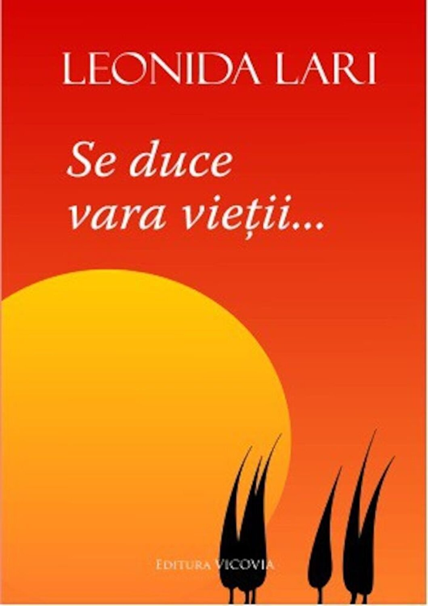

LEONIDA LARI
Date biografice
Publicatii

Leonida Lari-Iorga s-a născut pe 26 octombrie 1949, Bursuceni, RSS Moldoveneasca, URSS și a decedat 11 decembrie 2011, Chisinau, Republica Moldova. A fost o poeta, publicista, scriitoare, activista, om politic si militanta pentru reunirea Basarabiei cu Romania.
S-a nascut intr-o familie de invatatori, mama sa fiind Nadejda Tuchilatu. A absolvit Universitatea de Stat din Moldova, din Chisinau, facultatea de filologie. A fost colaborator la Muzeul de literatura D. Cantemir din Chisinau (1971-1973), redactor la revista "Literatura si Arta" (1985-1988) din RSSM, redactor sef al primei publicatii in grafie latina din Republica Moldova - "Glasul natiunii" (1988-2003).
Leonida Lari s-a aflat printre fruntasii Miscarii de emancipare nationala din Basarabia in anii 1988-1991. A fost Deputat in Sovietul Suprem al URSS (1988-1990) si membru al Biroului Permanent al Frontului Popular din Republica Moldova intre 1990 si 1992. Intre 1990 si 1997 a stat in fruntea Ligii Crestin Democrate a Femeilor din Moldova (una din componentele constituante ale Partidului Social-liberal in 2001). Incepand cu anul 1992 este deputat in Parlamentul Romaniei (in 2004 a fost aleasa pe lista Partidului Romania Mare).
Leonida Lari a fost membru PRM timp de aproape 10 ani, ea obtinand in total trei mandate de deputat (primul dintre ele obtinandu-l pe liste PNTCD, dupa care a trecut la PRM)
La inceputul lunii februarie 2005, pe cand era singurul parlamentar al PRM Suceava, Leonida Lari a anuntat ca demisioneaza din acest partid deoarece prefera „libertatea de a gandi si de a actiona” si „un limbaj civilizat chiar fata de adversarii politici”.
In ziarul Jurnal de Chisinau s-a opinat ca: A fost membru al Partidului Romania Mare, pe care l-a parasit, trebuie sa recunoastem, dintr-un motiv egoist, deloc principial, fiindca nu a mai fost „realeasa” intr-un post oarecare din structurile PRM.


Opere
Este autor a 24 de volume de poezie și proză, precum și traducător din marea poezie universală.
- Piața Diolei (1974)
- Marele vânt (1980)
- Mitul trandafirului (1985)
- Scoica solară (1987)
- Insula de repaus (1988)
- Lumina grăitoare (1989)
- Dulcele foc (1989)
- Anul 1989 (1990)
- Lira și păianjenul (1991)
- Govorâŝij svet (1992)
- Al nouălea val (1993)
- Epifanii (1994)
- Scrisori de pe strada Maica Domnului (1995)
- Lunaria (1995)
- Aldebaran (1996)
- Între îngeri și demoni (1998)
- Învingătoarele spații (1999)
- Insula de repaus (2000)
- Răstignirea porumbeilor (2003)
- Epifanii și teofanii (2005)
- Infinitul de aur (2006)
- Sibila (2006)
- Traduceri din lirica universala (2009)
- 101 poeme (2009)